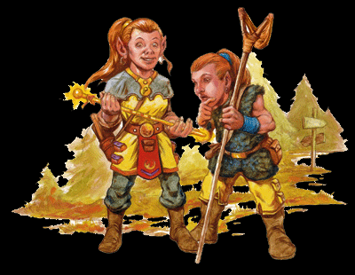

译者: E·S & Ellesime
坎德人

翻译：水晶头骨（种族特性部分采用E·S & Ellesime的翻译）
++++++++++++++++++++++++++
坎德人
对于其他的种族来说，坎德人是克莱恩上的后来种族（child-race）。小体型的（diminutive）坎德人集中注意力的时间很短（have short attention span），他们有强烈的好奇心并且无所畏惧，这让他们在战斗中表现出色，但这常常使他们（以及那些和他们一起旅行者）身处险境。
性格：坎德人过着无忧无虑的生活，每个新的一天都充满著有待发掘的有趣秘密。最能说明其性格特点的就是他们那无止境的好奇心和绝对的毫无恐惧，这是一种令人恐惧的组合。所有黑暗的山洞都有待探索，所有上锁的门都需要打开，所有的柜子里都藏着一些有趣的东西。
大约在20岁左右的年轻坎德人都被“旅行癖”所折磨，这种强烈的愿望是他们离开自己的家园而踏上探索的旅程。在他们的家园以外遇到的坎德人几乎都在游荡中。
坎德人会迫不及待的想要找到新奇刺激的事物，只有最极端的环境才能使他们把自我保护放在这种追求之前考虑。即使是迫近死亡也不能阻止坎德人，因为死亡对他们来说是下一个真正的大冒险的开始。
当坎德人有一点点自我保护的本能而且并不乐意在寻找冒险中丢掉他们的性命时，他们依靠平常的判断冲动行事的倾向使他们在危险情况中表现的不计后果——他们可以轻易的加入到任何地冒险团队。无聊是坎德人最大的破坏之源（arch-nemesis），这种情况下，他们会不惜一切代价摆脱这种感觉（to be conquered at any cost）。据说克莱恩上没有任何比一个无聊的坎德人更危险的事物，或是说没有比听见一个坎德人说“啊呀！糟糕（Oops!）”更吓人的事情。
坎德人是偏激（extreme）的产物。没有什么比呵呵傻笑的坎德人的笑声更具传染力，也没有什么比看见一个悲伤的坎德人更令人心碎。由于他们注意力集中的时间很短，坎德人极少能够长期专注于任何一件事情。坎德人无聊的时候就是他们最恐怖的时候。无法找到什么趣事的坎德人会决定自己去做一些有趣的事情，通常都会有可怕的后果。
坎德人难以抑制的好奇心驱使他们去调查所有的东西——包括其他人的私人财物。坎德人会把吸引到他们目光的几乎所有东西都顺手拿走。物理边界（physical boundary）或私有的观念对于他们而言都是陌生的概念。比起蓝宝石，他们更可能被被夜鹰的羽毛所诱惑。没有什么比坎德人的手在周围人的口袋、包包或背包中更能让他们高兴。
坎德人并不像其他明了此事的人一样把这种行为看作偷窃（坎德人像其他人一样认为小偷是一个侮辱性的字眼）。他们把这种行为称为“转手（Handling）”或“借用”，因为他们都坚决打算把他们偷走的东西还给物品的主人。只是因为他们的生命中发生了太多激动人心或棒极了的事情，于是忘记了把东西还回去。在被指控偷盗或是扒别人的包包时，坎德人最多是觉得困惑，最坏的情况下会觉得被凌辱。他们总是罗列出听戏来相当有道理的解释来为每项对他们的指控加以辩护。他们最喜欢用的有：
“他一定是自己掉到我的包包里面去的。”
“你弄丢了它，我只不过把它捡起来好还给你。”
“我一直在保护它的安全。有人试图把它偷走的时候你从来都不知道。”
“我不记得我有这个了。它是你的？”
“太巧了！我也有一个和那个一模一样的。”
“难道你不是要把这个送给我当礼物啊？”
转手是每个坎德人的日常生活。坎德人的转手和盗贼或游荡者的诡计偷窃有着微妙但重要的区别。不幸的是，只有坎德人自己才能真正理解到其中的不同。
一旦建立起友谊，坎德人的忠诚将会是无与伦比的。一旦有机会（这毋庸置疑地需要非坎德人的一方有巨大的耐心），坎德人会和他们的同伴形成永久的纽带联结。坎德人自己不会感到恐惧，但他们能感到他们的朋友的恐惧，这常会诱发坎德人冲动的脾性。坎德人会因为失去朋友而感到深深的悲伤，而看到一个悲伤的坎德人足以使心肠最硬的人留下同情的泪水。
作为他们好奇天性的一个重要组成部分，坎德人对恐惧的效果完全免疫。恐惧无法侵入的坎德人有着强烈的自信，使得他们在具压力的情况下有非常高的效力——如果他们的同伴能使他们保持足够长时间的冷静以计划出一个行动方案。几乎在所有情况下，坎德人都好管闲事，使得看到这一切的人都对坎德人的勇敢表示尊重。在很罕见的情况下，坎德人也会感到害怕，他们将其描述为胃部一种很奇怪的感觉，通常会认为这种不舒服的感觉是因为他们吃的食物引起的。
可能是对他们矮小身材的补偿，坎德人在探究他人抱有的不安全感、偏执妄想和偏见方面拥有无误的准确性。坎德人通晓辱骂之道的大师，他们将其发展成为了一种艺术。坎德人的骂阵可以使受害者忘记数年的训练和经验而暴怒，这些受害者只会剩下一个念头——杀掉那个在骂阵的坎德人。无论是煽动一群乌合之众的暴动还是引诱危险的敌人从暗藏中现身出来，骂阵都是坎德人的战略中一项强力的武器。
体型与外貌：虽然他们的骨架较小，但坎德人实际上惊人的强壮和灵活。男性和女性站立的高度都在3 1/2英尺到4英尺之间，一些也可能达到接近5英尺。他们的体重在80到100磅之间。眼睛的颜色从淡蓝色到淡棕色，而发色为沙金色、淡棕或深棕色，或是醒目的红色或紫铜色。西方的坎德人中流行修剪成短发，而东方的坎德人喜欢留长发。无论如何，坎德人的头发经常都被稀奇古怪地编起来并装饰着奇怪的饰品。他们喜欢色彩艳丽的衣物，比起有品位的衣物，坎德人更喜欢怪异的颜色和不协调的样式。意识到第一印象的价值，坎德人遇到新认识的人时的直觉反应就是整理自己的衣服，打理一下自己，伸出手做自我介绍。坎德人的服装都非常个性化，但却有一个相似之处。所有坎德人的衣服上都有很多很多的包包，用来装他们喜欢的锁碎物。
坎德人的声音短而尖利，当他们生气的时候会变得尖利刺耳且模仿别人以嘲弄他人，特别是他们在口头上攻击受害者的时候。随着坎德人年龄的增加，他们的声调稍稍变得有些低沉，但仍保持在这种奇特的范围内。坎德人可以很轻易地模仿鸟类和动物的叫声。在激动的时候，坎德人说话的速度会很快且声音很大。坎德人的交谈是漫无目的的，他们常从一个话题迅速转移到另一个话题。坎德人不会保守秘密以保命，他们会兴高采烈地将他们自己和其他任何人的个人信息脱口而出公之于众。
坎德人的寿命可以超过100年，即使到了老年也依然保持着对生命那种朝气蓬勃的热情。坎德人20岁成年，流浪癖好袭来的症状开始表露出来，到70岁左右进入老年阶段，流浪的癖好开始减退，这时候坎德人就会定居下来（虽然有些坎德人终生都不会定居）。坎德人几乎不显老，随着年龄的增加，仅仅能看到他们眼角的鱼尾纹和笑纹稍稍加深，两鬓的头发稍稍灰白。由于坎德人的好奇和无畏，他们常常很难活到定居的岁数，因此他们对年长的坎德人有着深深的崇敬。
与其他种族的关系：坎德人可以同任何人以及他们遇到的所有人相处，但他们会毫不犹豫地声明他们讨厌伤害到他们朋友的某个人。当遇到新的人时（无论是什么种族），坎德人会立即伸出手去做自我介绍。当坎德人遇到同族时，他们会开始持续数小时的长篇大论似的交流，他们会试图弄明白彼此之间的关系（几乎总是通过触陷阱舅舅开始），并且比较彼此口袋和包包里那些稀奇有趣的东西。
然而，其他种族却不像坎德人喜欢他们一样地喜欢坎德人。西瓦纳斯提精灵认为坎德人是招人讨厌的有害种族，他们不喜欢提起伟大的精灵王国的建立者西瓦诺斯的同伴和朋友巴利弗（Balief）是一个坎德人。一些奎宁纳斯提精灵认为坎德人有趣，并且嘉许坎德人对他们的朋友的忠诚，而大多数对坎德人的行为既不感到困惑也不会被其所激怒。无论是高山矮人还是丘陵矮人都认为坎德人是“一无是处的懒汉”，他们将坎德人视作一个盗贼的种族。思想守旧的人类，从索兰尼亚人到亚苟斯人，都不喜欢坎德人，认为他们是盗贼公害。坎德人同侏儒相处融洽，他们都有相同的好奇心。而卡贡纳斯提精灵认为物质拥有都是稍纵即逝的，平原居民认为“疯狂”的人都被诸神庇佑，因此他们都愿意同坎德人一起游历，也欢迎坎德人到他们的家园去。食人魔、地精和龙人认为只有烤熟的坎德人才是好坎德人。
所有种族真正的智者都知道坎德人于世界无害，而如果失去了坎德人，那么世界就如同失去了某些珍宝。
阵营：坎德人的观念倾向于中立。他们不认为他们自己在破坏法律，且实际上对“盗贼”非常蔑视。如果他们认为某条法律不公正（如伊斯塔人试图对坎德人的贸易征收高额的税金），那么坎德人就会彻底忽视这条法律（伊斯塔人最后免除了坎德人的关税和税金）。坎德人对生命和自由高度重视，且几乎不会改变，因此邪恶的坎德人极其罕见（邪恶的诸神也发现了这一点）。
居住地：在凡人之年代早期，坎德摩尔被红龙马里斯瑞尔摧毁，只剩下了这种坎德城市焦灰的遗迹。坎德摩尔的居民们向西方迁徙，被北亚苟斯岛亥洛的同族们接纳。坎德人的社会不像安塞隆上的其它社会是寡头政治（omnigarchy），所有人都服从。坎德社会中每个人都可以做自己喜欢的事情，只要他们不会伤害到彼此。除了亥洛，在安塞隆大陆上的每一个角落度可以找到坎德人（主要是因为每个坎德人一生中都必然会有的“流浪癖”），虽然安塞隆上的大多数人都希望这些无可救药的坎德人居住在别处。
宗教：虽然坎德人知道所有的诸神（避免伤害到任何神祗的感情），他们最敬仰布兰查拉、奇思洛夫、米莎凯和吉力安。李奥克斯被视作唠叨而慈善的祖父，但坎德人并不会特别地颂扬他。声名远扬的泰索何夫•伯伏特的冒险和他那被再三讲述的勇敢的故事和功绩，也使传说中的费资本在一些坎德人社区中成为受人景仰的神祗。
语言：坎德人有自己的语言，这种语言被通俗地成为“坎德语”，他们也能使用通用语。坎德人对传说和故事有巨大的兴趣，因此他们在同其他种族一起的时候几乎不使用坎德语以免妨碍交流。
姓名：每个坎德人都有自己的名，以及一个更具描述性的“选”名（通常——但也不总是——由他们自己选择）以最好地描述他们的功绩、成就以及对生活的展望。他们习惯使用某些流行或英雄的名字以能继承名字原来的主人的好名声。但不会遇到一整队游历的坎德人都叫同一个名字。年轻的坎德人常受到他们的长辈或亲戚的影响。家族纽带的重要性意味着坎德人会保有他们的姓以忠于他们的血统（The importance of familial ties often means that kinder will maintain a family name out of loyalty of their blood ine）。
男子名：阿莱（Arlie），布克尔安（Buckeran），杰克恩（Jackin），克诺宁（Kronin），马龙（Malon），彭翠恩（Pentrien），塔利（Tarli），泰索何夫（Tasslehoff），特科尔（Tekel），托宾（Tobin）。
女子名：阿玛瑞（Amari），安玻（Amber），阿索拉（Athola），凯特（Catt），伊玛拉（Emla），伊萨尼（Ethani），朱尼珀（Juniper），米拉（Mela），潘克西娜（Paxian），提丽（Teeli）。
所选名：伯伏特（Burrfoort），迪普珀奇兹（Deeppockets），弗莱米海尔（Flamehair），莱特埃斯（Lighteyes），尼姆伯里芬格斯（Nimblefingers），奎科斯特普（Quickstep），瑞德菲舍尔（Redfeather），瑞德勒（Riddler），索伏特瑞德（Softread），希斯特里诺特（Thistleknot）。
冒险：所有坎德人的冒险都是适于他们的流浪癖——他们需要在生命中的那些时光里探索和冒险，这需求优先于其他所有事情。这段“时期”会持续于他们生命的大部分时间或是剩下的所有时光。没有其他任何种族像坎德人一样满足于冒险的生活方式。
坎德人的种族特性：
•敏捷+2，力量-2，感知-2：瘦小的坎德人行动灵活，而并不以力量见长。坎德人拥有无尽的好奇心，因此从来不会详细考虑自己的行动，以及行动所带来的结果。
•小型生物：作为小型生物，坎德人在防护等级以及攻击骰上获得+1的体形奖励，在躲藏检定上获得+4的体形奖励，但坎德人必须使用比人类略小的武器，他们的举重和负重能力是中型生物的四分之三。
•坎德人的基本速度为20尺
•所有豁免获得+1的奖励：也许是由于坎德人无论在什么情况下都能保持乐观，以及他们相信所有种族都有善良的一面，因此坎德人可以在这个对他们并不友好的世界里，生存壮大。
•侦察检定获得+2的种族奖励： 坎德人眼光敏锐。
•开锁和手技（Sleight of Hand）检定获得+2的种族奖励：所有坎德人都极为好奇，总想要知道门后面或是包包里究竟藏着些什么。并且坎德人不需受训便可以使用这两项技能。
•缺乏耐心（Lack of Focus）：坎德人在专注检定上承受-4的种族惩罚。坎德人并不缺乏魔法天赋，但却缺乏必要的专注和耐心，因此很少能在法师的道路有所成就。
•骂阵（Taunt）：坎德人对其他种族的心理特征了如指掌，因此当他们把这种直觉使用在讽刺挖苦侮辱谩骂时，很容易让目标失去理智。坎德人进行漫骂时，在唬骗检定上获得+4的种族奖励。
•无畏：坎德人对恐惧效果免疫。
•天生语言：坎德人使用通用语。额外语言：矮人语，亚苟斯语（Ergot），精灵语，地精语，索兰尼亚语（Solamnic）
•天赋职业：游荡者
————————————边 栏————————————————
唬骗和骂阵技能
虽然所有的坎德人都精于此道，但所有的角色在对敌人进行骂阵的时候都需要进行唬骗检定。唬骗检定的目标对象必须能看到和听到在骂阵的角色，必须是有智力的生物，并且能听懂骂阵的角色使用的语言。对影响心灵的效果免疫的生物同样这种唬骗技能免疫。
骂阵：在战斗中对对手骂阵时，进行唬骗检定，目标进行察言观色检定对抗。如果你的唬骗检定结果高于你的目标的察言观色检定结果，目标则被你的骂阵所激怒，并在你的下次行动之前在攻击骰和AC上受到-1罚值。被你的骂阵所吸引的敌人会在下一击时攻击你，但并非受到强迫要如此行动。
使用唬骗技能对敌人骂阵需要耗时一个标准动作，但不会引发借机攻击。
————————————————————————————
————————————边 栏————————————————
变种坎德人
当巨龙马里斯瑞尔摧毁坎德摩尔的时候，她所做的远不止烧毁一个小镇——她扼杀了那里的坎德人的内在活力（inner spark）。只有在马里斯瑞尔攻击坎德摩尔时居住在那里的坎德人受到了影响。这些坎德人发现他们的勇气和好奇心都消失殆尽，生命也变得毫无乐趣。变种坎德人忽然之间变得像其他的普通人一样——焦虑、烦躁以及忧郁。他们极少关注自己，总是在发现危险的那一刻立即逃走。
变种坎德人穿着深色的衣物以使他们能融入阴影，他们对包包和口袋也没有兴趣。变种坎德人对漂亮的小饰物缺乏兴趣，也不会将他们的手伸进不恰当的包包里。没有变种坎德人“转手者”。如果变种坎德人偷窃某样东西，那么这名坎德人确切地知道他在偷什么以及为什么他需要这个东西。
变种坎德人认为如果他们可以从敌人那里逃走或是能消除敌人的敌意，那么他们就觉得骂阵是没有必要的。虽然其他种族喜欢变种坎德人这种不寻常的安静的风格，但这些坎德人发现令他们自己惊奇的是，他们不喜欢在这些种族周围待着。变种坎德人的眼睛里缺乏乐趣和生命的光辉。变种坎德人比任何真正的坎德人都要斤斤计较和冷心肠。
各种小组都致力于用各种方法来治疗这种变种坎德人。一些侏儒将对这些治疗的研究确立为他们的毕生目标。其他人相信变种是一中诅咒，而一些没有变种的坎德人则努力寻找方法来解除这种诅咒。一些方法行之有效；而另一些则依然徒劳无功。此刻，尚没有绝对能“治愈”的方法，但没有人放弃去找寻一个行之有效的方法。
种族特性：变种坎德人的种族特性同所有正常坎德人一样，除了以下内容：
•攀爬、躲藏、跳跃和潜行检定有+2的种族奖励加值。变种坎德人不像以前一样，他们试图小心地经过而不引起其他人的注意。
•变种坎德人在对敌人进行骂阵时无法获得他们在唬骗检定上的奖励加值，也没有典型的坎德人所有的无畏。他们缺乏正常坎德人的兴趣爱好，因此在进行专注检定时不会受到罚值。
————————————————————————————
|